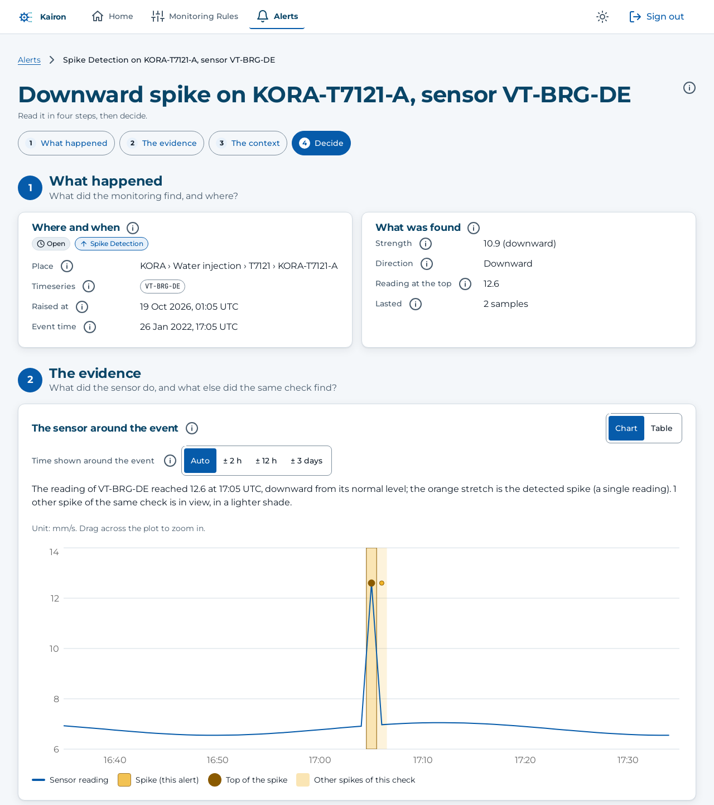
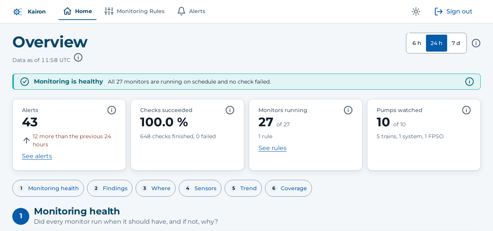

01 / INDUSTRIAL INTELLIGENCERESEARCH PROTOTYPE
Kairon.
A clearer view of what’s happening on the plant floor.
Kairon brings together equipment monitoring, data-quality checks, and evidence around alerts. Its AI assistant helps explain findings; the decision remains with the engineer.
A PhD research prototype. Its monitoring checks have been evaluated using synthetic data; the AI analysis has not yet been judged against reviewers’ decisions.
Discuss this work ↗
